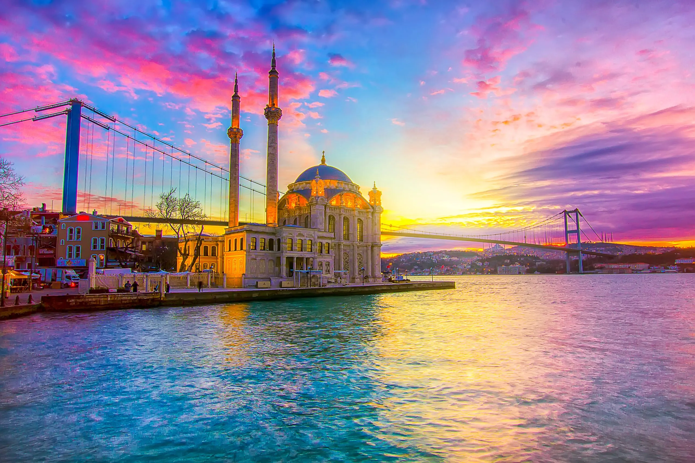
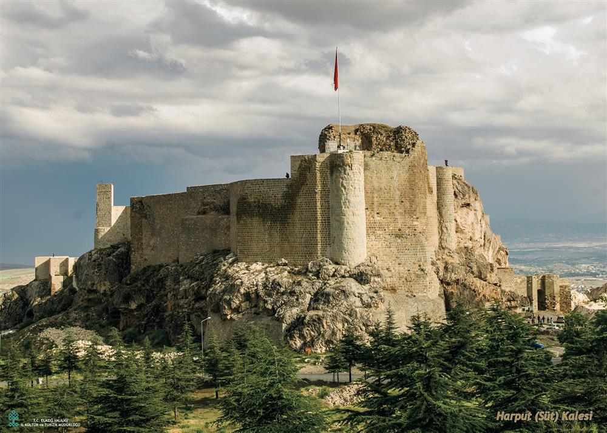

A summary examples of things I have learned on 11 July
A table that change its colors when you hover your mause over them
F1 Team
Team Principle
Base
Mercedes AMG
Toto Wolf
Germany
Scuderia Ferrari
Frederic Vasseur
Italy
RedBull
Christian Horner
Austria
McLaren
Andrea Stella
UK
Alpine
Bruno Famin
France
Haas
Ayao Komatsu
USA
RacingBulls
Laurent Mekies
Italy
Sauber
Andreas Seidl
Switzerland
Williams
James Vowles
UK
Aston Martin
Mike Krack
UK
Styling Lists With Colors
Coffee
Tea
Turnip
Coffee
Tea
Turnip
Difference between display:none and visiblity: hidden
Box 1
Box 2

Box 3

CSS Overflow
İstinye Üniversitesi, Liv Hospital, “Medical Park ve VM Medical Park olmak üzere üç ayrı hastane markasını tek çatı altında buluşturan MLP Care Grubu’nun 29 yıllık bilgi ve birikiminin devamı olarak, 21. Yüzyıl Anadolu Vakfı tarafından 2015 yılında kurulmuştur.
Kendisini fark yaratacak eğitim ve araştırmaya adamış başarılı akademik kadrosu ile İstinye Üniversitesi, öğrencilerine var olan bilgiyi aktararak kendi alanlarında güçlü bir donanım sağlarken, eğitim ve araştırma performansı ile yeni bilgi üretilmesine katkıda bulunarak Türkiye’nin ve dünyanın seçkin üniversiteleri arasında yer almayı hedeflemektedir.
Öğrenci odaklı eğitim anlayışını üniversitenin tüm süreçlerinde uygulayan İstinye Üniversitesi, bilim ve araştırma merkezi olma vizyonu doğrultusunda, öğretim üyelerinin araştırmaları ile bilimin sınırlarını genişletmeyi, bilimsel gelişmelerden edinilen bulguları toplumun refahı için uygulamaya geçirmeyi ve bununla birlikte topluma kaliteli ve erişilebilir sağlık hizmeti sunmayı amaçlamaktadır. Öğretim, araştırma ve toplum hizmetleri etkinliklerini evrensel standartlarda yürüterek, öğrencilerine geniş tabanlı bir bilgi yelpazesinin yanı sıra, teknoloji ve sanatı da kapsayan bir öğrenme ve ilerleme ortamı sunar.
Öğrencilerini liderlik yetenekleri ile donatılmış, bilimin gücüne güvenen, dünyadaki gelişmeleri yakından takip eden, eleştirel düşünebilen; insani ve etik değerlere sahip, kendini geliştirme ve yaratıcılığını kullanma alışkanlığı edinmiş bireyler olarak yetiştirir. İstinye Üniversitesi, geleceğin yetkin, yaratıcı ve ileri görüşlü bireylerini bünyesinde yetiştirerek toplumumuzun sosyal, kültürel, ekonomik, bilimsel ve teknolojik gelişiminde önemli bir rol oynamayı ve insanlığın ilerlemesine katkıda bulunmayı hedeflemektedir.